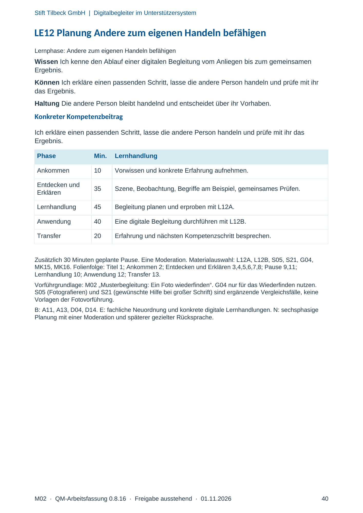
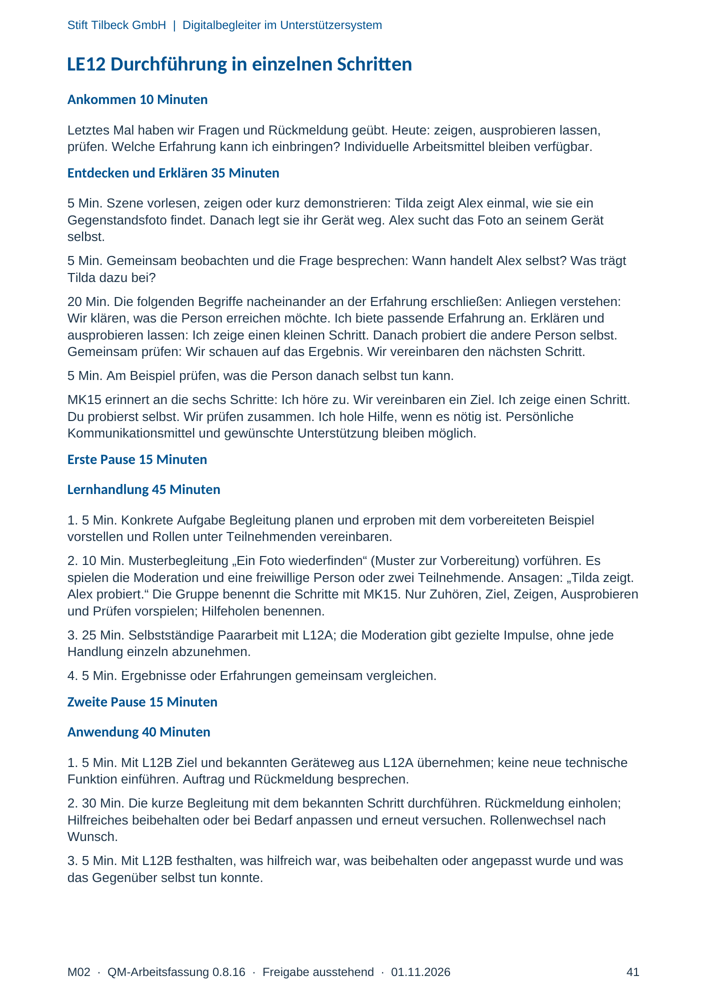
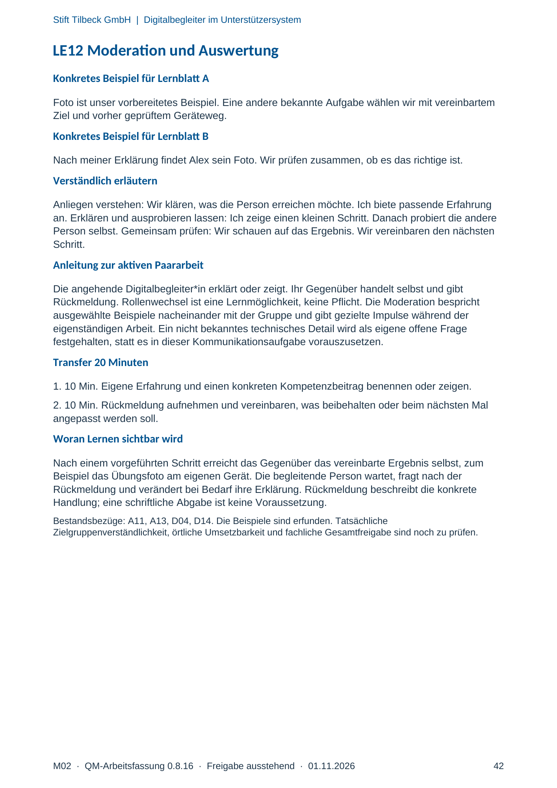
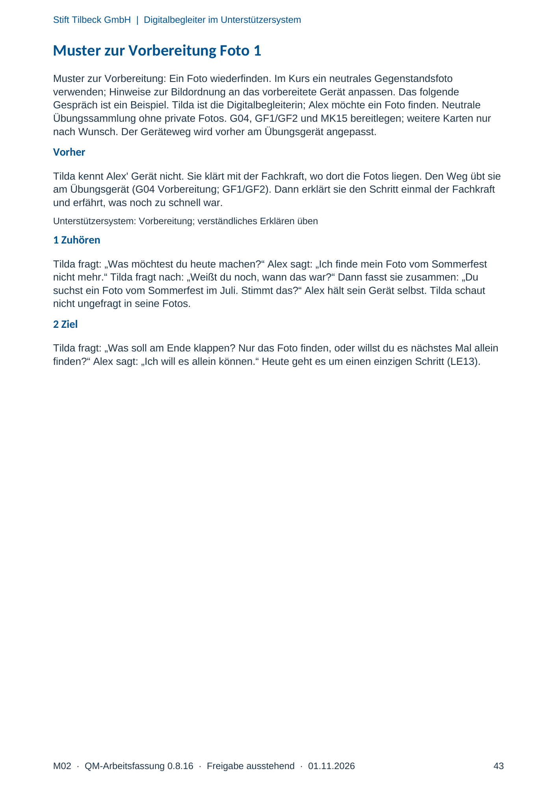
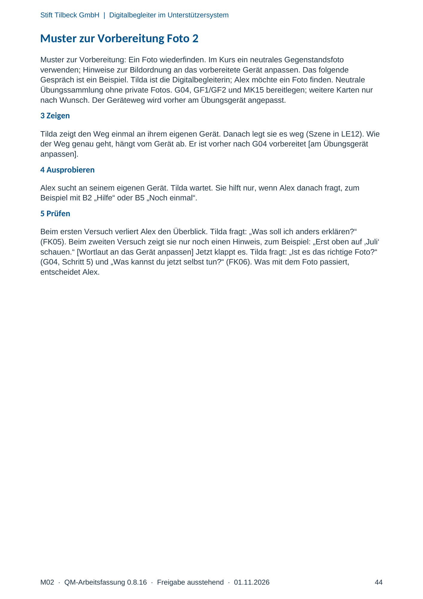
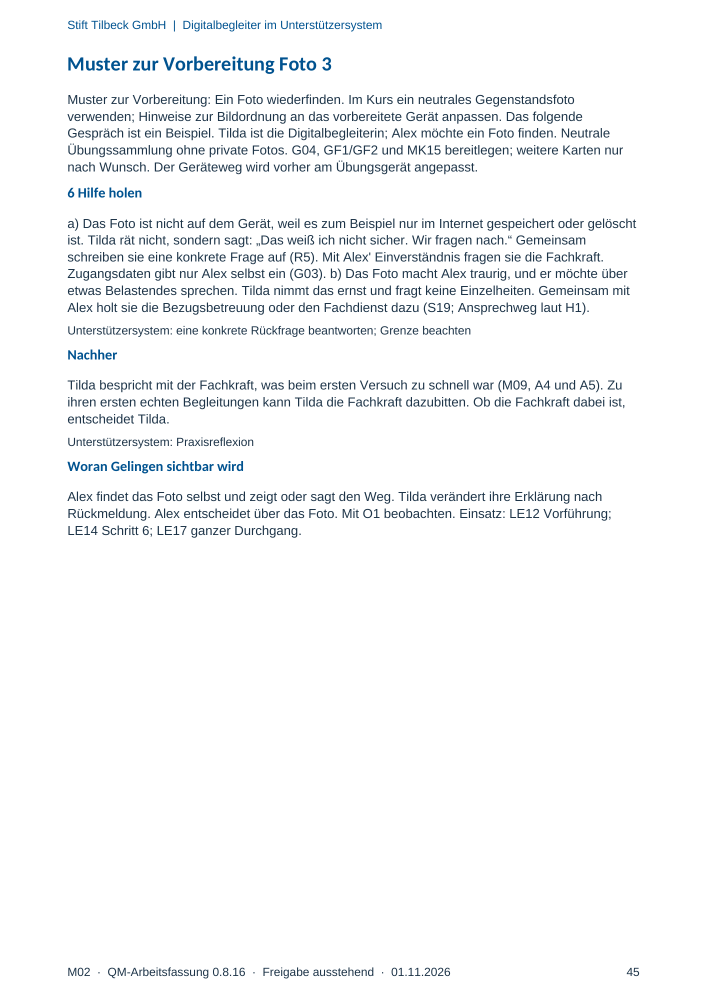

M02 · Originalseite 40, 41, 42, 43, 44, 45
Handbuch und Muster
Gezielte Original-Druckauswahl.
Fragen und Ankreuzfelder werden auf dem Ausdruck bearbeitet. Die Lesefassung speichert keine Antworten.
Lesefassung · Seite 40
Stift Tilbeck GmbH | Digitalbegleiter im Unterstützersystem
M02 · QM-Arbeitsfassung 0.8.16 · Freigabe ausstehend · 01.11.2026 40
LE12 Planung Andere zum eigenen Handeln befähigen
Lernphase: Andere zum eigenen Handeln befähigen
Wissen Ich kenne den Ablauf einer digitalen Begleitung vom Anliegen bis zum gemeinsamen
Ergebnis.
Können Ich erkläre einen passenden Schritt, lasse die andere Person handeln und prüfe mit ihr
das Ergebnis.
Haltung Die andere Person bleibt handelnd und entscheidet über ihr Vorhaben.
Konkreter Kompetenzbeitrag
Ich erkläre einen passenden Schritt, lasse die andere Person handeln und prüfe mit ihr das
Ergebnis.
Phase Min. Lernhandlung
Ankommen 10 Vorwissen und konkrete Erfahrung aufnehmen.
Entdecken und
Erklären 35 Szene, Beobachtung, Begriffe am Beispiel, gemeinsames Prüfen.
Lernhandlung 45 Begleitung planen und erproben mit L12A.
Anwendung 40 Eine digitale Begleitung durchführen mit L12B.
Transfer 20 Erfahrung und nächsten Kompetenzschritt besprechen.
Zusätzlich 30 Minuten geplante Pause. Eine Moderation. Materialauswahl: L12A, L12B, S05, S21, G04,
MK15, MK16. Folienfolge: Titel 1; Ankommen 2; Entdecken und Erklären 3,4,5,6,7,8; Pause 9,11;
Lernhandlung 10; Anwendung 12; Transfer 13.
Vorführgrundlage: M02 „Musterbegleitung: Ein Foto wiederfinden“. G04 nur für das Wiederfinden nutzen.
S05 (Fotografieren) und S21 (gewünschte Hilfe bei großer Schrift) sind ergänzende Vergleichsfälle, keine
Vorlagen der Fotovorführung.
B: A11, A13, D04, D14. E: fachliche Neuordnung und konkrete digitale Lernhandlungen. N: sechsphasige
Planung mit einer Moderation und späterer gezielter Rücksprache.
Originalseite ansehen

Lesefassung · Seite 41
Stift Tilbeck GmbH | Digitalbegleiter im Unterstützersystem
M02 · QM-Arbeitsfassung 0.8.16 · Freigabe ausstehend · 01.11.2026 41
LE12 Durchführung in einzelnen Schritten
Ankommen 10 Minuten
Letztes Mal haben wir Fragen und Rückmeldung geübt. Heute: zeigen, ausprobieren lassen,
prüfen. Welche Erfahrung kann ich einbringen? Individuelle Arbeitsmittel bleiben verfügbar.
Entdecken und Erklären 35 Minuten
5 Min. Szene vorlesen, zeigen oder kurz demonstrieren: Tilda zeigt Alex einmal, wie sie ein
Gegenstandsfoto findet. Danach legt sie ihr Gerät weg. Alex sucht das Foto an seinem Gerät
selbst.
5 Min. Gemeinsam beobachten und die Frage besprechen: Wann handelt Alex selbst? Was trägt
Tilda dazu bei?
20 Min. Die folgenden Begriffe nacheinander an der Erfahrung erschließen: Anliegen verstehen:
Wir klären, was die Person erreichen möchte. Ich biete passende Erfahrung an. Erklären und
ausprobieren lassen: Ich zeige einen kleinen Schritt. Danach probiert die andere Person selbst.
Gemeinsam prüfen: Wir schauen auf das Ergebnis. Wir vereinbaren den nächsten Schritt.
5 Min. Am Beispiel prüfen, was die Person danach selbst tun kann.
MK15 erinnert an die sechs Schritte: Ich höre zu. Wir vereinbaren ein Ziel. Ich zeige einen Schritt.
Du probierst selbst. Wir prüfen zusammen. Ich hole Hilfe, wenn es nötig ist. Persönliche
Kommunikationsmittel und gewünschte Unterstützung bleiben möglich.
Erste Pause 15 Minuten
Lernhandlung 45 Minuten
1. 5 Min. Konkrete Aufgabe Begleitung planen und erproben mit dem vorbereiteten Beispiel
vorstellen und Rollen unter Teilnehmenden vereinbaren.
2. 10 Min. Musterbegleitung „Ein Foto wiederfinden“ (Muster zur Vorbereitung) vorführen. Es
spielen die Moderation und eine freiwillige Person oder zwei Teilnehmende. Ansagen: „Tilda zeigt.
Alex probiert.“ Die Gruppe benennt die Schritte mit MK15. Nur Zuhören, Ziel, Zeigen, Ausprobieren
und Prüfen vorspielen; Hilfeholen benennen.
3. 25 Min. Selbstständige Paararbeit mit L12A; die Moderation gibt gezielte Impulse, ohne jede
Handlung einzeln abzunehmen.
4. 5 Min. Ergebnisse oder Erfahrungen gemeinsam vergleichen.
Zweite Pause 15 Minuten
Anwendung 40 Minuten
1. 5 Min. Mit L12B Ziel und bekannten Geräteweg aus L12A übernehmen; keine neue technische
Funktion einführen. Auftrag und Rückmeldung besprechen.
2. 30 Min. Die kurze Begleitung mit dem bekannten Schritt durchführen. Rückmeldung einholen;
Hilfreiches beibehalten oder bei Bedarf anpassen und erneut versuchen. Rollenwechsel nach
Wunsch.
3. 5 Min. Mit L12B festhalten, was hilfreich war, was beibehalten oder angepasst wurde und was
das Gegenüber selbst tun konnte.
Originalseite ansehen

Lesefassung · Seite 42
Stift Tilbeck GmbH | Digitalbegleiter im Unterstützersystem
M02 · QM-Arbeitsfassung 0.8.16 · Freigabe ausstehend · 01.11.2026 42
LE12 Moderation und Auswertung
Konkretes Beispiel für Lernblatt A
Foto ist unser vorbereitetes Beispiel. Eine andere bekannte Aufgabe wählen wir mit vereinbartem
Ziel und vorher geprüftem Geräteweg.
Konkretes Beispiel für Lernblatt B
Nach meiner Erklärung findet Alex sein Foto. Wir prüfen zusammen, ob es das richtige ist.
Verständlich erläutern
Anliegen verstehen: Wir klären, was die Person erreichen möchte. Ich biete passende Erfahrung
an. Erklären und ausprobieren lassen: Ich zeige einen kleinen Schritt. Danach probiert die andere
Person selbst. Gemeinsam prüfen: Wir schauen auf das Ergebnis. Wir vereinbaren den nächsten
Schritt.
Anleitung zur aktiven Paararbeit
Die angehende Digitalbegleiter*in erklärt oder zeigt. Ihr Gegenüber handelt selbst und gibt
Rückmeldung. Rollenwechsel ist eine Lernmöglichkeit, keine Pflicht. Die Moderation bespricht
ausgewählte Beispiele nacheinander mit der Gruppe und gibt gezielte Impulse während der
eigenständigen Arbeit. Ein nicht bekanntes technisches Detail wird als eigene offene Frage
festgehalten, statt es in dieser Kommunikationsaufgabe vorauszusetzen.
Transfer 20 Minuten
1. 10 Min. Eigene Erfahrung und einen konkreten Kompetenzbeitrag benennen oder zeigen.
2. 10 Min. Rückmeldung aufnehmen und vereinbaren, was beibehalten oder beim nächsten Mal
angepasst werden soll.
Woran Lernen sichtbar wird
Nach einem vorgeführten Schritt erreicht das Gegenüber das vereinbarte Ergebnis selbst, zum
Beispiel das Übungsfoto am eigenen Gerät. Die begleitende Person wartet, fragt nach der
Rückmeldung und verändert bei Bedarf ihre Erklärung. Rückmeldung beschreibt die konkrete
Handlung; eine schriftliche Abgabe ist keine Voraussetzung.
Bestandsbezüge: A11, A13, D04, D14. Die Beispiele sind erfunden. Tatsächliche
Zielgruppenverständlichkeit, örtliche Umsetzbarkeit und fachliche Gesamtfreigabe sind noch zu prüfen.
Originalseite ansehen

Lesefassung · Seite 43
Stift Tilbeck GmbH | Digitalbegleiter im Unterstützersystem
M02 · QM-Arbeitsfassung 0.8.16 · Freigabe ausstehend · 01.11.2026 43
Muster zur Vorbereitung Foto 1
Muster zur Vorbereitung: Ein Foto wiederfinden. Im Kurs ein neutrales Gegenstandsfoto
verwenden; Hinweise zur Bildordnung an das vorbereitete Gerät anpassen. Das folgende
Gespräch ist ein Beispiel. Tilda ist die Digitalbegleiterin; Alex möchte ein Foto finden. Neutrale
Übungssammlung ohne private Fotos. G04, GF1/GF2 und MK15 bereitlegen; weitere Karten nur
nach Wunsch. Der Geräteweg wird vorher am Übungsgerät angepasst.
Vorher
Tilda kennt Alex' Gerät nicht. Sie klärt mit der Fachkraft, wo dort die Fotos liegen. Den Weg übt sie
am Übungsgerät (G04 Vorbereitung; GF1/GF2). Dann erklärt sie den Schritt einmal der Fachkraft
und erfährt, was noch zu schnell war.
Unterstützersystem: Vorbereitung; verständliches Erklären üben
1 Zuhören
Tilda fragt: „Was möchtest du heute machen?“ Alex sagt: „Ich finde mein Foto vom Sommerfest
nicht mehr.“ Tilda fragt nach: „Weißt du noch, wann das war?“ Dann fasst sie zusammen: „Du
suchst ein Foto vom Sommerfest im Juli. Stimmt das?“ Alex hält sein Gerät selbst. Tilda schaut
nicht ungefragt in seine Fotos.
2 Ziel
Tilda fragt: „Was soll am Ende klappen? Nur das Foto finden, oder willst du es nächstes Mal allein
finden?“ Alex sagt: „Ich will es allein können.“ Heute geht es um einen einzigen Schritt (LE13).
Originalseite ansehen

Lesefassung · Seite 44
Stift Tilbeck GmbH | Digitalbegleiter im Unterstützersystem
M02 · QM-Arbeitsfassung 0.8.16 · Freigabe ausstehend · 01.11.2026 44
Muster zur Vorbereitung Foto 2
Muster zur Vorbereitung: Ein Foto wiederfinden. Im Kurs ein neutrales Gegenstandsfoto
verwenden; Hinweise zur Bildordnung an das vorbereitete Gerät anpassen. Das folgende
Gespräch ist ein Beispiel. Tilda ist die Digitalbegleiterin; Alex möchte ein Foto finden. Neutrale
Übungssammlung ohne private Fotos. G04, GF1/GF2 und MK15 bereitlegen; weitere Karten nur
nach Wunsch. Der Geräteweg wird vorher am Übungsgerät angepasst.
3 Zeigen
Tilda zeigt den Weg einmal an ihrem eigenen Gerät. Danach legt sie es weg (Szene in LE12). Wie
der Weg genau geht, hängt vom Gerät ab. Er ist vorher nach G04 vorbereitet [am Übungsgerät
anpassen].
4 Ausprobieren
Alex sucht an seinem eigenen Gerät. Tilda wartet. Sie hilft nur, wenn Alex danach fragt, zum
Beispiel mit B2 „Hilfe“ oder B5 „Noch einmal“.
5 Prüfen
Beim ersten Versuch verliert Alex den Überblick. Tilda fragt: „Was soll ich anders erklären?“
(FK05). Beim zweiten Versuch zeigt sie nur noch einen Hinweis, zum Beispiel: „Erst oben auf ‚Juli‘
schauen.“ [Wortlaut an das Gerät anpassen] Jetzt klappt es. Tilda fragt: „Ist es das richtige Foto?“
(G04, Schritt 5) und „Was kannst du jetzt selbst tun?“ (FK06). Was mit dem Foto passiert,
entscheidet Alex.
Originalseite ansehen

Lesefassung · Seite 45
Stift Tilbeck GmbH | Digitalbegleiter im Unterstützersystem
M02 · QM-Arbeitsfassung 0.8.16 · Freigabe ausstehend · 01.11.2026 45
Muster zur Vorbereitung Foto 3
Muster zur Vorbereitung: Ein Foto wiederfinden. Im Kurs ein neutrales Gegenstandsfoto
verwenden; Hinweise zur Bildordnung an das vorbereitete Gerät anpassen. Das folgende
Gespräch ist ein Beispiel. Tilda ist die Digitalbegleiterin; Alex möchte ein Foto finden. Neutrale
Übungssammlung ohne private Fotos. G04, GF1/GF2 und MK15 bereitlegen; weitere Karten nur
nach Wunsch. Der Geräteweg wird vorher am Übungsgerät angepasst.
6 Hilfe holen
a) Das Foto ist nicht auf dem Gerät, weil es zum Beispiel nur im Internet gespeichert oder gelöscht
ist. Tilda rät nicht, sondern sagt: „Das weiß ich nicht sicher. Wir fragen nach.“ Gemeinsam
schreiben sie eine konkrete Frage auf (R5). Mit Alex' Einverständnis fragen sie die Fachkraft.
Zugangsdaten gibt nur Alex selbst ein (G03). b) Das Foto macht Alex traurig, und er möchte über
etwas Belastendes sprechen. Tilda nimmt das ernst und fragt keine Einzelheiten. Gemeinsam mit
Alex holt sie die Bezugsbetreuung oder den Fachdienst dazu (S19; Ansprechweg laut H1).
Unterstützersystem: eine konkrete Rückfrage beantworten; Grenze beachten
Nachher
Tilda bespricht mit der Fachkraft, was beim ersten Versuch zu schnell war (M09, A4 und A5). Zu
ihren ersten echten Begleitungen kann Tilda die Fachkraft dazubitten. Ob die Fachkraft dabei ist,
entscheidet Tilda.
Unterstützersystem: Praxisreflexion
Woran Gelingen sichtbar wird
Alex findet das Foto selbst und zeigt oder sagt den Weg. Tilda verändert ihre Erklärung nach
Rückmeldung. Alex entscheidet über das Foto. Mit O1 beobachten. Einsatz: LE12 Vorführung;
LE14 Schritt 6; LE17 ganzer Durchgang.
Originalseite ansehen
